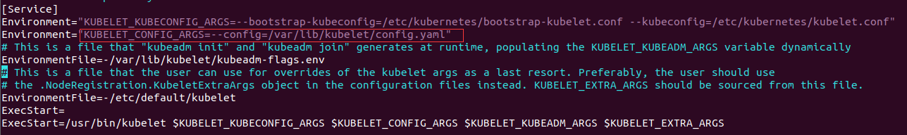
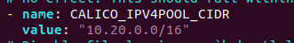
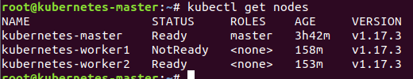

部署环境
- vmware15
- 三台虚拟机(使用静态 IP)
| ip | 资源配置 | 系统镜像 | Role |
|---|---|---|---|
| 192.168.1.201 | CPU 2 核、内存 4G、硬盘 20G | Ubuntu18.4.2 | Master |
| 192.168.1.202 | CPU 2 核、内存 2G、硬盘 20G | Ubuntu18.4.2 | Slave |
| 192.168.1.202 | CPU 2 核、内存 2G、硬盘 20G | Ubuntu18.4.2 | Slave |
- 保证集群中每个节点间的网络连通性
- 每个节点拥有唯一的 MAC 地址，hostname 和 product_uuid
- 保证所需端口的打开，这里我选择直接关闭防火墙。参考
- 关闭 swap，官方建议必须禁用swap 以使 kubelet 正常工作
安装 kubeadm,kubelet,kubectl(当前版本 1.17.3)
可使用虚拟机克隆进行三台机器的安装，要修改克隆节点的 ip
关闭防火墙
根据当前的防火墙配置(SELinux、Netfilter、iptables、firewall 和 UFW)选择关闭或配置相应的防火墙策略
# 如果存在firewalld:
sudo systemctl stop firewalld && sudo systemctl disable firewalld
# 如果存在ufw：
sudo ufw disable
关闭 swap
# 删除swap的所有内容
swapoff -a
# 删除swap挂载，保证永久关闭
# 注释swap所在的行
vim /etc/fstab
安装 docker(当前版本 19.03.4)
采用 k8s 官方的安装步骤
# Install Docker CE
## Set up the repository:
### Install packages to allow apt to use a repository over HTTPS
apt-get update && apt-get install -y \
apt-transport-https ca-certificates curl software-properties-common gnupg2
### Add Docker’s official GPG key
curl -fsSL https://download.docker.com/linux/ubuntu/gpg | apt-key add -
### Add Docker apt repository.
add-apt-repository \
"deb [arch=amd64] https://download.docker.com/linux/ubuntu \
$(lsb_release -cs) \
stable"
## Install Docker CE.
apt-get update && apt-get install -y \
containerd.io=1.2.10-3 \
docker-ce=5:19.03.4~3-0~ubuntu-$(lsb_release -cs) \
docker-ce-cli=5:19.03.4~3-0~ubuntu-$(lsb_release -cs)
# Setup daemon.
cat > /etc/docker/daemon.json <<EOF
{
"exec-opts": ["native.cgroupdriver=systemd"],
"log-driver": "json-file",
"log-opts": {
"max-size": "100m"
},
"storage-driver": "overlay2"
}
EOF
mkdir -p /etc/systemd/system/docker.service.d
# Restart docker.
systemctl daemon-reload
systemctl restart docker
安装方法
方法 1-官方安装步骤(配置代理)
配置 apt 代理
# 新建或修改apt.conf
vim /etc/apt/apt.conf
# 加入代理规则(http或socks5),当前http
Acquire::http::proxy "http://ip:port/";
Acquire::ftp::proxy "http://ip:port/";
Acquire::https::proxy "http://ip:port/";
更新源并安装
sudo apt-get update && sudo apt-get install -y apt-transport-https curl
curl -s https://packages.cloud.google.com/apt/doc/apt-key.gpg | sudo apt-key add -
cat <<EOF | sudo tee /etc/apt/sources.list.d/kubernetes.list
deb https://apt.kubernetes.io/ kubernetes-xenial main
EOF
sudo apt-get update
sudo apt-get install -y kubelet kubeadm kubectl
sudo apt-mark hold kubelet kubeadm kubectl
方法 2-使用阿里云镜像站
apt-get update && apt-get install -y apt-transport-https
curl https://mirrors.aliyun.com/kubernetes/apt/doc/apt-key.gpg | apt-key add -
cat <<EOF >/etc/apt/sources.list.d/kubernetes.list
deb https://mirrors.aliyun.com/kubernetes/apt/ kubernetes-xenial main
EOF
apt-get update
apt-get install -y kubelet kubeadm kubectl
配置 cgroup-driver
在/etc/systemd/system/kubelet.service.d/10-kubeadm.conf文件中追加--cgroup-driver=systemd

改为：Environment="KUBELET_CONFIG_ARGS=--config=/var/lib/kubelet/config.yaml --cgroup-driver=systemd"
保存重启
systemctl daemon-reload
systemctl restart kubelet
同时要保证 docker 的 cgroup 为 systemd，可以使用docker info | grep -i cgroup查看
部署集群
docker 拉取镜像配置
由于集群所需的 docker 镜像无法从国内直接获取，可配置代理或使用国内的仓库
方法 1-使用 docker 代理
# 创建文件夹和文件
sudo mkdir -p /etc/systemd/system/docker.service.d
touch /etc/systemd/system/docker.service.d/http-proxy.conf
# 向文件添加代理配置
[Service]
Environment="HTTP_PROXY=http://ip:port/"
# 保存配置并重启
sudo systemctl daemon-reload
sudo systemctl restart docker
方法 2-拉取阿里云镜像
# 编写脚本
for i in `kubeadm config images list`; do
imageName=${i#k8s.gcr.io/}
docker pull registry.aliyuncs.com/google_containers/$imageName
docker tag registry.aliyuncs.com/google_containers/$imageName k8s.gcr.io/$imageName
docker rmi registry.aliyuncs.com/google_containers/$imageName
done;
配置 Master 节点
init
kubeadm init --pod-network-cidr=10.20.0.0/16 --apiserver-advertise-address=192.168.1.201
- –pod-network-cidr：用于第三方网络插件提供的子网范围。
- 必须部署基于容器网络接口（CNI）的 Pod 网络附加组件，以便 Pod 可以相互通信。
- **确保您的 Pod 网络一定不能与任何主机网络重叠。**我选择的是 calico，默认是 192.168.0.0/16，所以修改了 cidr。
- 参考Installing a Pod network add-on
- –apiserver-advertise-address，(可选)，此处是为了保证多网卡下使用正确的 ip 地址
init 的相关内容可参考Initializing your control-plane node
init 输出内容如下
[init] Using Kubernetes version: vX.Y.Z
[preflight] Running pre-flight checks
...
Your Kubernetes control-plane has initialized successfully!
To start using your cluster, you need to run the following as a regular user:
mkdir -p $HOME/.kube
sudo cp -i /etc/kubernetes/admin.conf $HOME/.kube/config
sudo chown $(id -u):$(id -g) $HOME/.kube/config
You should now deploy a Pod network to the cluster.
Run "kubectl apply -f [podnetwork].yaml" with one of the options listed at:
/docs/concepts/cluster-administration/addons/
You can now join any number of machines by running the following on each node
as root:
kubeadm join <control-plane-host>:<control-plane-port> --token <token> --discovery-token-ca-cert-hash sha256:<hash>
确保记录 kubeadm join <control-plane-host>:<control-plane-port> --token <token> --discovery-token-ca-cert-hash sha256:<hash>，该命令用于从节点加入集群。
为了使 kubectl 适用于您的非 root 用户，运行以下命令，它们也是 kubeadm init 输出的一部分
mkdir -p $HOME/.kube
sudo cp -i /etc/kubernetes/admin.conf $HOME/.kube/config
sudo chown $(id -u):$(id -g) $HOME/.kube/config
安装 Pod 网络附加组件
命名为：kubectl apply -f <add-on.yaml>，此处选择使用Calico。由于init修改了默认子网
下载 calico.yaml，地址：https://docs.projectcalico.org/v3.11/manifests/calico.yaml
编辑 calico.yaml，搜索并修改默认配置(192.168.0.0/16)

使用kubectl apply -f calico.yaml 开始安装插件。
使用watch kubectl get pods --all-namespaces查看安装情况
配置 Slave 节点
当前虚拟机环境下，需要保证每个节点的 hostname 不一样，否则不能加入集群
参考：How to Install Kubernetes on Ubuntu 18?
配置 hostname
# 在master上设置hostname
sudo hostnamectl set-hostname k8s-m
#在两个slave上分别设置hostname
sudo hostnamectl set-hostname k8s-w1
sudo hostnamectl set-hostname k8s-w2
当安装完 master，且 slave 也有对应的 kube 环境时，将之前保存的那个命令在当前节点运行。
kubeadm join <control-plane-host>:<control-plane-port> --token <token> --discovery-token-ca-cert-hash sha256:<hash>
注意：从节点也会有 kubelet 运行，所以依旧要保持 docker 和 kubeadm 的cgroup-driver都为systemd
正常加入后，显示如下：
[preflight] Running pre-flight checks
... (log output of join workflow) ...
Node join complete:
* Certificate signing request sent to control-plane and response
received.
* Kubelet informed of new secure connection details.
Run 'kubectl get nodes' on control-plane to see this machine join.
在 master 查看节点

其他
kubeadm 集群的高可用
在 init 时配置 –control-plane-endpoint
单机集群
默认情况下，出于安全原因，您的群集不会在控制平面节点上调度 Pod。如果您希望能够在控制平面节点上调度 Pod，例如用于单机 Kubernetes 集群进行开发，请运行：
kubectl taint nodes --all node-role.kubernetes.io/master-
输出看起来像这样：
node "test-01" untainted
taint "node-role.kubernetes.io/master:" not found
taint "node-role.kubernetes.io/master:" not found
将 API 服务器代理到本地主机
kubectl proxy
清理
如果您在群集中使用了一次性服务器进行测试，则可以关闭这些服务器，而无需进一步清理。您可以使用kubectl config delete-cluster删除对集群的本地引用。
但是，如果您想更干净地清理群集，首先排空该节点并确保该节点为空，然后取消配置该节点。
删除节点
kubectl drain <node name> --delete-local-data --force --ignore-daemonsets
kubectl delete node <node name>
通过 在需要清除的节点上运行kubeadm reset，进行重置
重置过程不会重置或清除 iptables 规则或 IPVS 表。如果您希望重置 iptables，则必须手动进行。
iptables -F && iptables -t nat -F && iptables -t mangle -F && iptables -X
如果要重置 IPVS 表，则必须运行命令：ipvsadm -C